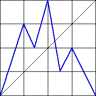

| 6. (a) This is a Markov partition, because every bin that is entered is crossed
completely: |
From bin 1 we can go to all of bins 1, 2, and 3. |
From bin 2 we can go to all of bins 3 and 4. |
From bin 3 we can go to all of bin2 2, 3, and 4. |
From bin 4 we can go to all of bins 1 and 2. |
|  |
| (b) Because this is a Markov partition, the driven IFS is determined
entirely by the forbidden pairs. These are |
| 1 → 4, 2 → 1, 2 → 2, 3 → 1, 4 → 3, and 4 → 4 |
| Consequently, the empty length 2 addresses are 41, 12, 22, 13, 34, and 44. |
| This eliminates (ii), because square with address 44 is not empty
in (ii). |
| In (iii) the square with address 111 is empty, yet the
pair 11 is not forbidden. So (iii) is not produced by a Markov partition. |
|